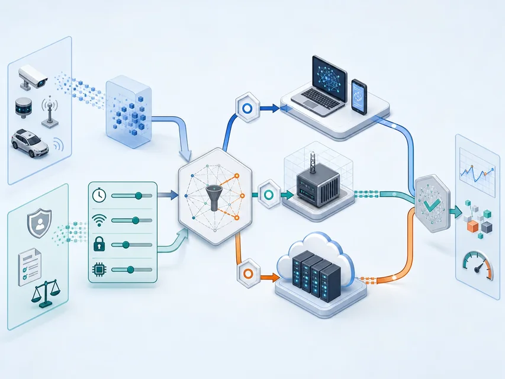

输入
湿度读数25%
安排计算位置、响应时限与故障接手
 VER. 2608
Built with impress.js
VER. 2608
Built with impress.js
为温度告警、车牌识别选择执行位置，写出响应时间、上送数据和失败处理
先写任务输入、规则和输出，再选执行位置
湿度读数25%
小于30%
低湿告警

计算也可用于图像识别或趋势预测；分配位置前，还要写响应时限、资源需求和确认人
同一份数据在不同任务中可能需要不同的计算位置
车辆避障可能只有极短时间，月度能耗报告可以延后计算
一台门锁的一次请求，与全城设备一年的日志规模不同
端侧有多少算力、存储、电量和上行带宽，预算能承担多少
哪些动作必须继续，哪些数据先缓存，恢复后怎样补传
原始视频、病历、模型和控制指令分别允许谁读取
谁解释、确认、接管并批准最终动作
| 任务 | 请写输入 | 请写规则与输出 | 请补充关键约束 |
|---|---|---|---|
| 温度超限 | 填写 | 填写 | 填写 |
| 车牌识别 | 填写 | 填写 | 填写 |
| 预测维护 | 填写 | 填写 | 填写 |
| 医疗诊断建议 | 填写 | 填写 | 填写 |
不要先问“用什么 AI”，先问任务要在何时、根据哪些数据、由谁负责完成
端设备直接处理输入，不必把所有原始数据送出
端上采集与筛选 → 即时响应 → 按需向边缘或云端上报
低通信延迟、少占带宽、可离线、数据较少外传
传感器、手环、家电、机器人、手机和车载计算单元
专用硬件可省电；通用硬件便于更换任务、兼容软件
算力、存储和电池有限；软件与密钥要更新，设备还可能被拆走或损坏
任务是否长期不变、部署多少台、以后是否升级，决定选专用还是通用设备
为固定任务定制软硬件，可优化能耗与成本，但升级扩展较难
用标准硬件与软件处理多种任务；维护更容易，但配置超过需要时会增加成本和功耗
多装算力会增加成本和耗电；只需做固定阈值告警的传感器，不一定需要通用高性能芯片
| 场景 | 请写设备上先做什么 | 请写算力、电量、更新或失败问题 |
|---|---|---|
| 门锁开门 | 填写 | 填写 |
| 手环异常 | 填写 | 填写 |
| 摄像头监控 | 填写 | 填写 |
| 离线导航 | 填写 | 填写 |
端上处理后仍可上送数据；按任务、时延与隐私要求确定范围
设备可以把任务交给附近的计算节点，但也可以在本地完成或直接交给云端
通信路径短，延迟和回传数据量可能更小
可配服务器与加速器，并提供存储和设备管理
工厂网关先筛选异常、加密上送；仍需权限和安全更新
边缘服务器可先处理现场数据并快速返回；仍要写清它断线后设备做什么、谁维护服务器
按任务大小、传输耗时、能耗和可用算力，检查能否按时完成
端设备完成全部任务
通信少、可离线，但受端侧资源限制
边缘或云端完成任务
端侧负担小，但依赖链路和远端可用性
例如端侧预处理、边缘推断、云端汇总
可平衡延迟、能耗、带宽与隐私
总时延要包括发送、计算与返回；本表数值均为教学设定
| 方案 | 各段耗时 | 总响应 |
|---|---|---|
| 本地执行 | 本地计算25ms | 25ms |
| 全部交给远端 | 上行80ms＋计算10ms＋下行80ms | 170ms |
| 交给现场边缘 | 去程3ms＋计算5ms＋回程3ms | 11ms |
若任务要求50ms内返回，按本表远端全卸载不满足；真实选型还需测量波动、排队与故障
不重新背三种定义，直接指出需要自己维护的部分
| 课堂选定服务 | 用户仍负责的任务 | 服务模式回顾 |
|---|---|---|
| 租云主机部署湿度API | 操作系统、运行环境、应用与数据 | IaaS |
| 提交代码到托管运行环境 | 应用代码、数据与业务权限 | PaaS |
| 使用现成设备管理应用 | 账户、规则、设备绑定与业务数据 | SaaS |
| 云端工作 | 请写适合放在云端的原因 | 请写现场仍要保留的部分 |
|---|---|---|
| 长期数据分析 | 填写 | 填写 |
| 模型训练与更新 | 填写 | 填写 |
| 设备管理服务 | 填写 | 填写 |
| 关键安全动作 | 填写 | 填写 |
云端可分析大量设备的长期数据；现场仍要能紧急停止设备，在断网时保留必要功能，并记录当前模型版本和设备状态
机器筛选大量数据；人查看原始材料、处理例外、说明理由，并对动作负责
数据与模型 → 机器分析 → 人判断与沟通 → 决策行动 → 反馈
利用人的识别、判断与输入完成计算
把可分解任务分给大量参与者，汇总群体结果
利用技术支持群体互动、知识共享和集体决策
让机器和人互补，共同完成复杂任务
增强、自动化和放大可以同时发生，分别观察支持、执行者和规模
| 形式 | 温室例子 | 主要变化 |
|---|---|---|
| 增强 | 系统列出异常地块，农务员决定是否检修 | 人得到分析支持 |
| 自动化 | 按阈值发低湿度提醒，人工处理例外 | 机器执行规则内步骤 |
| 放大 | 从一万条记录筛出少量异常供人查看 | 同样人力处理更多记录 |
先写自动执行范围和人工处理的异常；普通提醒无需逐条批准
| 场景 | 请写机器适合的部分 | 请写人需要保留的部分 |
|---|---|---|
| 医学影像 | 填写 | 填写 |
| 生产分拣 | 填写 | 填写 |
| 客服问答 | 填写 | 填写 |
| 复杂工程设计 | 填写 | 填写 |
判断是否适合自动化，要看谁使用机器结果、谁检查错误，以及出错后谁负责处理
只模拟 controller-01 与云端断开；现场设备之间仍能通信
| 实体 | 本例任务 |
|---|---|
| soil-01 湿度探头 | 采集 plot-A 湿度；三次读数为 35%、25%、24% |
| controller-01 控制器 | 湿度低于 30% 时本地告警；缓存未上传记录 |
| valve-01 阀门 | 接收开关目标，执行后报告状态和时间 |
| 云端应用 | 设置 valve-01 的目标，显示最后收到的设备报告 |
本例告警只发提醒；云端应用另行设置开阀目标
valve-01 的 desired 是期望状态，reported 是最后报告；两者可能暂时不同
| 阶段 | 期望 / 报告 | 应如何显示 |
|---|---|---|
| 联网，阀门关闭 | closed / closed | 报告与目标一致 |
| 断网后应用要求开阀 | open / closed | 等待设备同步，不能显示已开 |
| 恢复后执行并报告 | open / open | 报告变为 open，效果待核验 |
同时查看报告时间与版本；收到 open 报告，不等于已经核验现场水流
按任务分配计算位置，并明确安全动作、最终决策和故障维护
端侧感知与控制，边缘处理道路协同，云端训练与长期分析；关键安全动作不能只依赖远端
设备和平台采集整理，机器辅助分析，医生负责临床判断、沟通与最终决策
调度系统分配任务和资源，检查网络与版本；维护人员查看操作记录，并在故障时减少功能或恢复服务
controller-01 按湿度 < 30% 告警；连接与阀门动作均为模拟
核对告警时限、断网后的本地功能与恢复后的数据补传